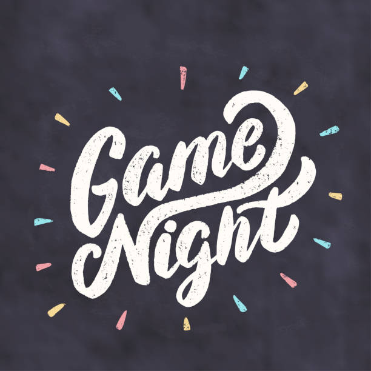
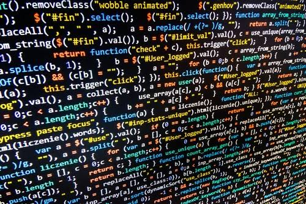
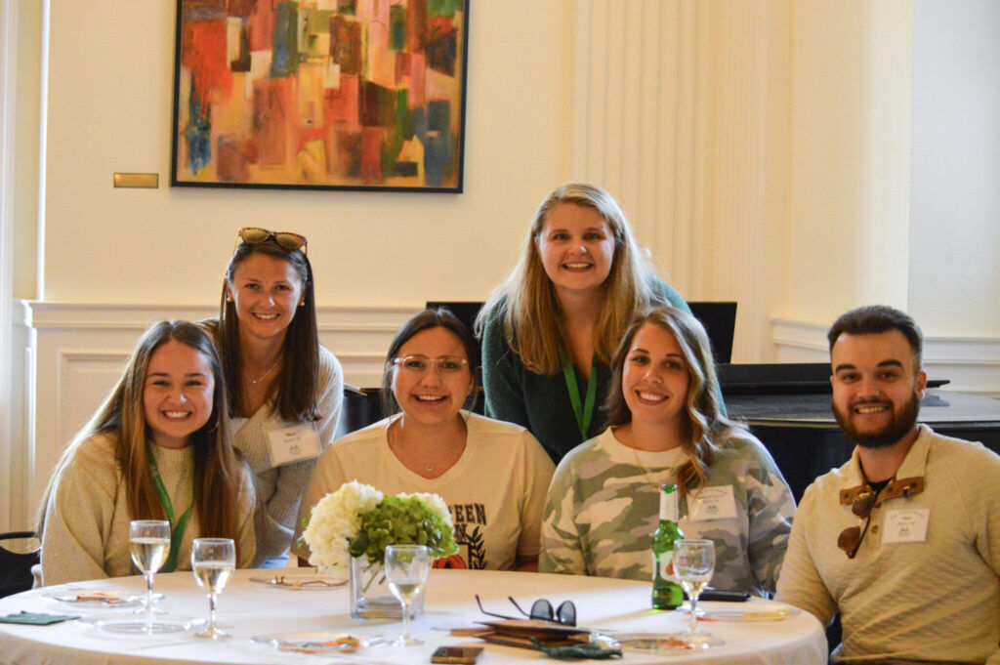
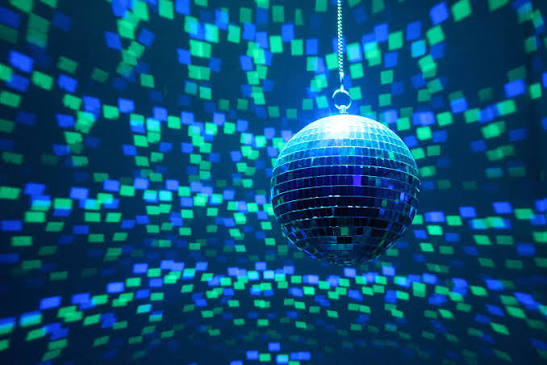

Game nights
Join your contemporaries for a game night in the pool room! Drinks and food will be provided.

View our featured event! The Livingston College AI Hackathon is built for student developers, ML researchers, and emerging founders who care about high-throughput inference and sovereign infrastructure. Deploy frontier open-source models directly on dedicated high-performance GPU clusters right here on campus. No locked-in black boxes—just open weights, high-speed execution, and complete control over what you ship. Compete, deploy your best work, and claim your share of prizes and campus recognition. View Schedule & Register
Join your contemporaries for a game night in the pool room! Drinks and food will be provided.

Interactive coding sessions covering modern web architecture, CSS layouts, and performance.

Connect with peers in your classification!

Come for a disco night in the ball room! Music will be played, drinks and food will be provided

Come join us for the annual book fair! It will take place in the ballroom.

The Livingston Student Center serves as the vibrant heart of campus life at the University of North Carolina at Livingston. Designed as a welcoming hub for students, creators, and teachers, our facility offers dynamic spaces where students gather between classes to study, collaborate, and have fun. From game nights in the lounge to coding hack-a-thons and social gatherings in the grand ballroom, the center fosters meaningful connections, campus traditions, and personal growth throughout every semester.